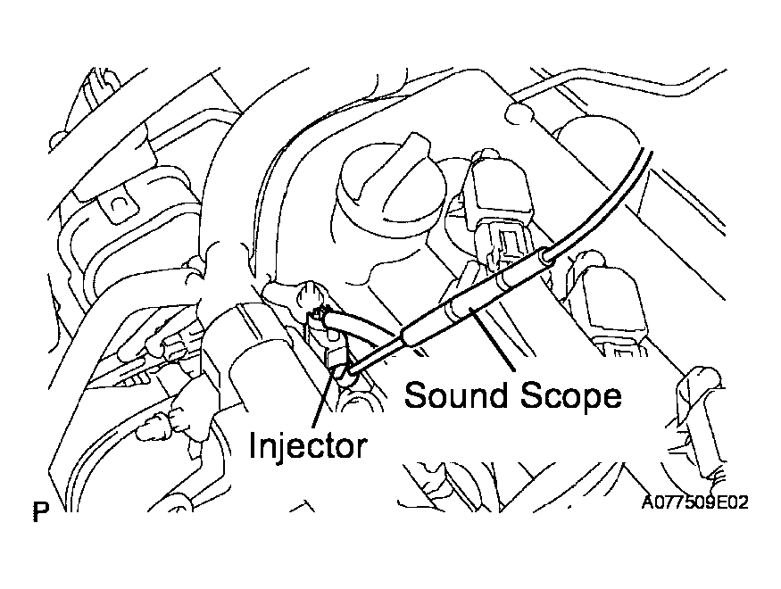
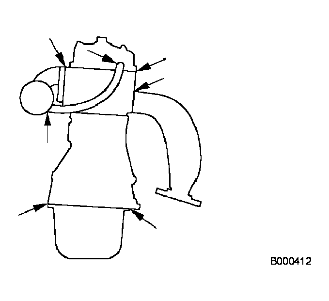
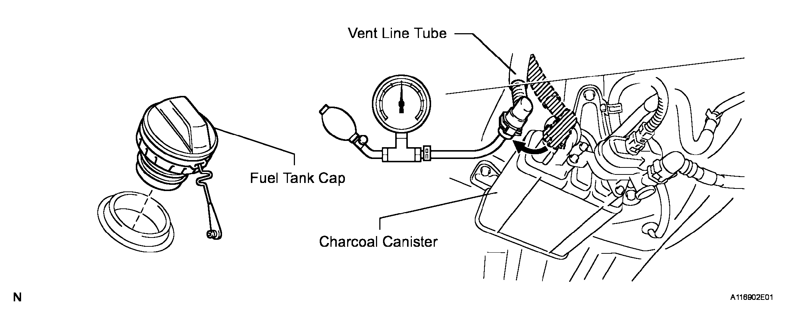

On-Vehicle Inspection
- CHECK FUEL CUT RPM
- Increase the engine speed to at least 3,500 rpm.
- Use a sound scope to check for injector operating noise.
- Check that the operating sounds stop momentarily and then resume when the throttle lever is released.

Courtesy of © TOYOTA, LICENSE AGREEMENT TMS1002HINT:
Measure with the A/C OFF.
Fuel return rpm: 1,400 rpm
- VISUALLY CHECK HOSES, CONNECTORS, AND GASKETS
- Check that there are no cracks, leaks or damage.

Courtesy of © TOYOTA, LICENSE AGREEMENT TMS1002NOTE:- Detachment or other problems with the engine oil dipstick, filler cap, PCV hose and other components may cause the engine to run improperly.
- Disconnection, looseness or cracks in the parts of the air induction system between the throttle body and cylinder head will allow air suction and cause an engine failure or engine malfunctions.
If the result is not as specified, replace parts as necessary.
- Check that there are no cracks, leaks or damage.
- CHECK LINE AND CONNECTORS
- Visually check for loose connections, sharp bends or damage.
- CHECK FUEL TANK ASSEMBLY
- Visually check for deformation, cracks or fuel leakage.
- CHECK FUEL TANK AND VENT LINE

Courtesy of © TOYOTA, LICENSE AGREEMENT TMS1002- Disconnect the vent line hose from the canister.
- Connect the pressure gauge to the vent line tube.
- Apply 4 kPa (41 kgf/cm2
, 30 mmHg) of pressure to the vent line of the fuel tank.
HINT:
Perform this inspection with the fuel tank less than 90% full. When the fuel tank is full, the fuel cutoff valve closes and pressure is released through the 1.5 mm orifice. As a result, when the fuel tank cap is removed, pressure does not decrease smoothly.
- Check that the fuel tank pressure is maintained for some time, and does not decrease immediately.
HINT:
If pressure decreases immediately, one of the following may be the cause:
- The fuel tank cap is not completely tightened.
- The fuel tank cap is damaged.
- Air is leaking from the vent line.
- The fuel tank is damaged.
- When the fuel tank cap is removed, check that pressure is released smoothly.
HINT:
If the pressure does not drop, replace the fuel tank assembly.
- Reconnect the vent line tube to the canister.
- CHECK AIR INLET LINE
- Disconnect the air inlet line hose from the charcoal canister.
- Check that air flows freely into the air inlet line.
HINT:
If air does not flow freely into the air inlet line, repair or replace it.
- Reconnect the air inlet line hose to the charcoal canister.